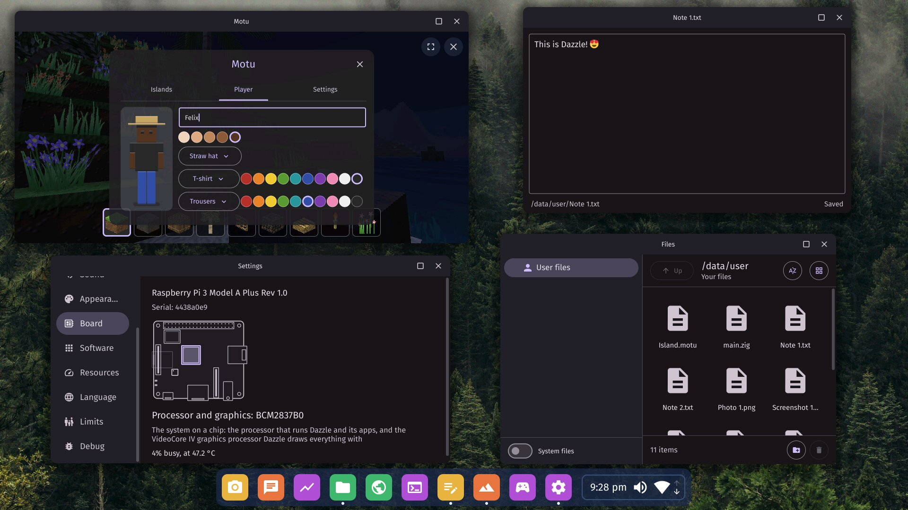

A full OS for the smallest devices
Dazzle is an ultra-light operating system for Raspberry Pi computers. It is made to run well on the smallest, lowest-powered Pi: the Raspberry Pi Zero.
Install Dazzle
Made for the Pi Zero
Runs on Raspberry Pi 1–5 and the Zero, Zero W and Zero 2 W. An SD card of 256 MB is enough.
Apps on tap
Add apps directly from the settings: files, camera, games, a terminal and more.
Boots in seconds
Every part of the system is tuned for the Pi's hardware, so it starts quickly and stays responsive.
Open source
Written in Zig, on the Raspberry Pi's own Linux kernel. See the code.
Install Dazzle
It takes a few minutes: write the image to a microSD card, put it in your Pi and switch on.
You will need
- A Raspberry Pi (1–5, or Zero / Zero W / Zero 2 W)
- A microSD card, 256 MB or larger (everything on it will be erased)
- An HDMI display (with a mini- or micro-HDMI adapter if your board needs one)
- A USB keyboard and mouse, or a USB touchscreen (on the Zero, a micro-USB OTG adapter and hub)
- Optional: a USB Ethernet adapter, or a Raspberry Pi Camera Module v1 or v2
Download Dazzle
dazzle.img.xz. There is no need to unpack it.
Open Raspberry Pi Imager
Get it from raspberrypi.com/software, then choose your device.
Choose the image
Under Choose OS, scroll to the bottom and pick Use Custom, then select the
dazzle.img.xzyou downloaded.Choose your microSD card
Under Choose Storage, pick your card.
Write it
Click Next. When asked about OS customisation, choose No: Dazzle asks for its own settings when it starts.
Boot
Put the card in your Pi, connect the display and keyboard and mouse, and power it on.
Apps
Everything in the Dazzle store. On Dazzle, open Settings → Software to install any of these.
Loading apps…